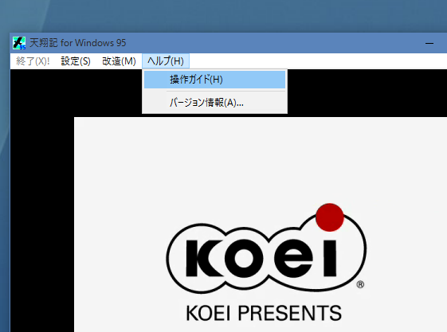

概要
以下の説明は、Windows 10以降など、「.hlp」ファイルの表示が「完全に未サポート」となったOSを使用している人に向けて、
天翔記において、.hlpファイルを表示するための対処方法を記載しています。
Windows Vista ～ Windows8.0/8.1の人
Windows Vista ～ Windows 8.1 は「こちら」の マイクロソフトのページでサポートされています。
Windows10以降の人は、WinHlp32.exeインストールバッチファイルが有力な方法
Windows10用WinHlp32.exeインストールバッチファイルなどを使用するのは１つの有力な手法です。
但し、大きなWindows 10 更新のタイミングでは、ファイル構成の手戻りが発生することもあり、
再度インストールする必要性もあることでしょう。
Windows10以降の人は、Windows XP用のWinHlp32.exeをコピーする方法も有力な方法
Windows XP の「C:\Windowsフォルダ」内にある「WinHlp32.exe」のファイルをWindows10以降へとコピーして、
単純に利用する方法です。
-
Windows XP～Windows7の「C:\Windowsフォルダ」から、WinHlp32.exe を、
天翔記フォルダ(tenshou.exeと同じフォルダ)にコピーします。
その際、後々同名ファイル問題などが起きないよう、「WinHlpXP.exe」とファイル名を変更してください。
-
ten95.hlpファイルを、WinHlpXP.exeファイルへとドラッグすることで、閲覧できるようになります。
-
TSModを導入している場合は、Windows8.1以前同様に、「天翔記起動時のヘルプメニューの操作ガイド」から直接閲覧可能となります。
